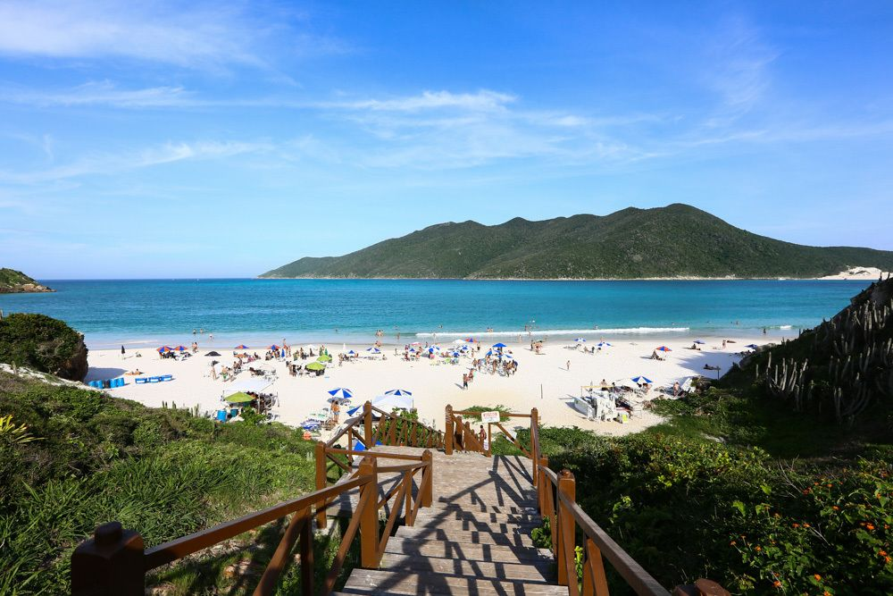
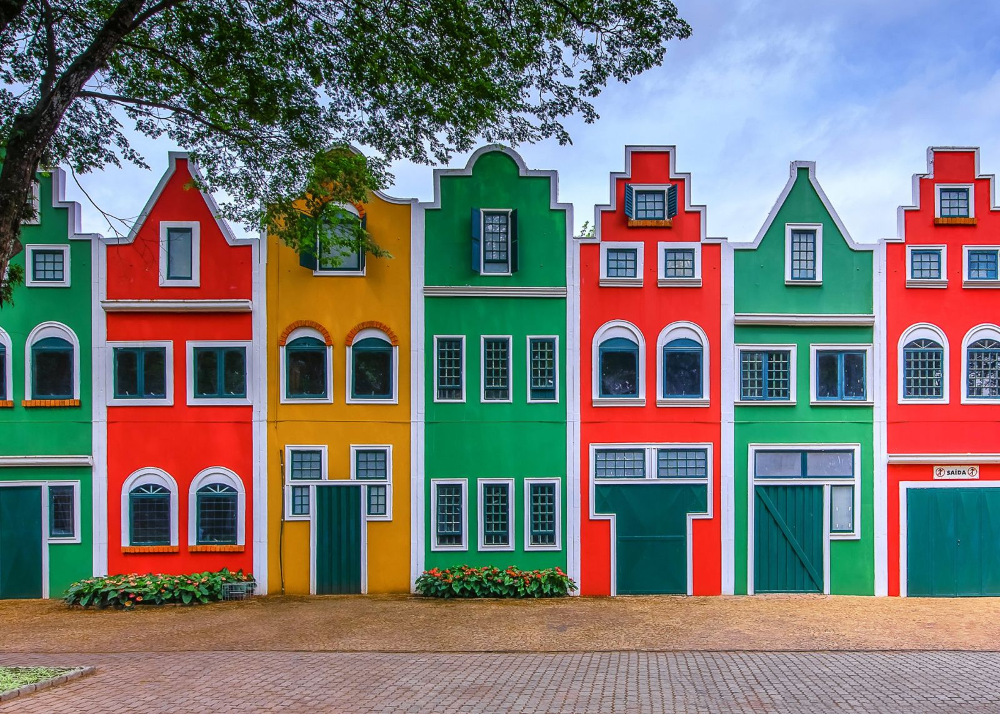
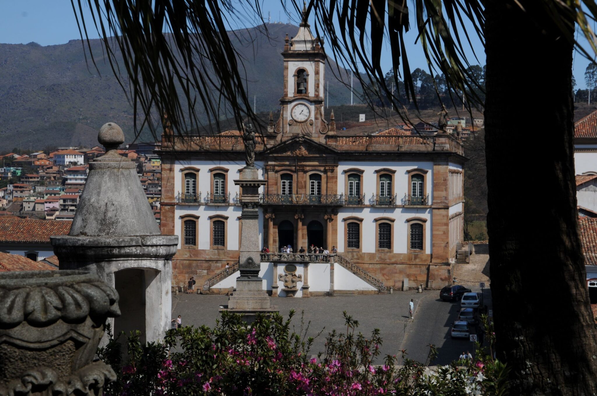
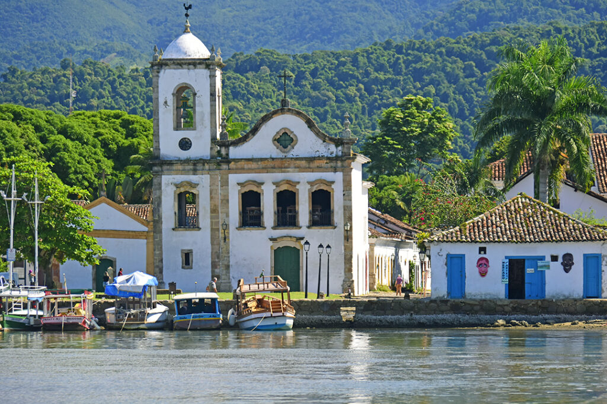
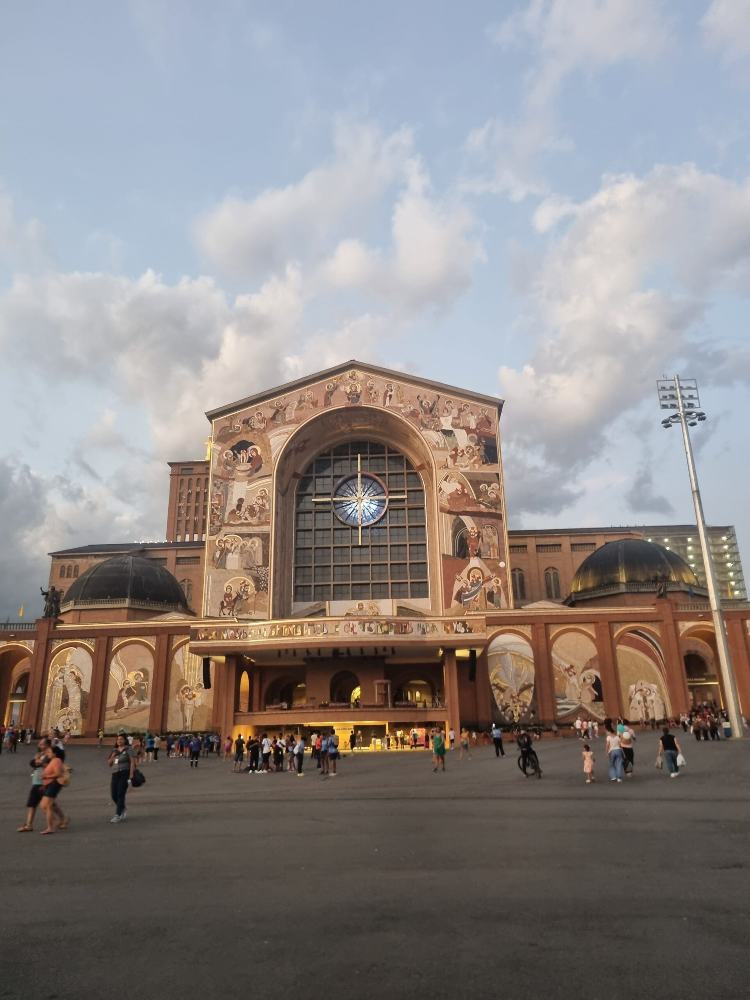
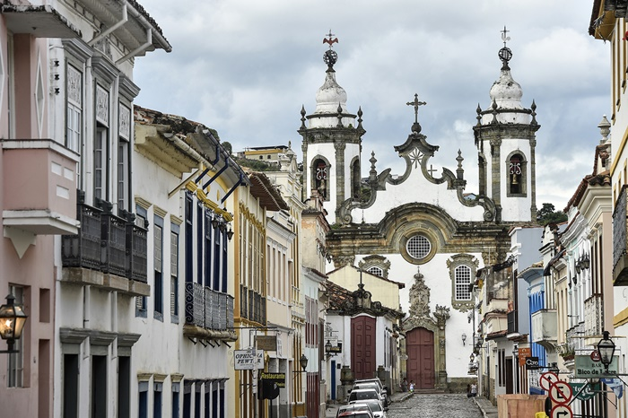

Turismo cheio de emoções e paisagens incríveis no Rio de Janeiro
Mais do que passeios, oferecemos vivências inesquecíveis com conforto, segurança e encanto.
Bem-vindo ao Rio de Janeiro. Cidade Maravilhosa!
Passeio Imperdível
💚✨Prepare-se para se encantar com o Cristo Redentor, símbolo maior da fé e do acolhimento carioca, e com o Pão de Açúcar, onde o visual panorâmico do Rio de Janeiro tira o fôlego de qualquer visitante. Durante o tour, você ainda explora outros cenários icônicos, repletos de cultura, cores e energia vibrante. 💚✨
Saiba MaisConheça Nossos Passeios da Capital do Rio de Janeiro
🌄 Descubra a Região Serrana do Rio de Janeiro
Um refúgio de charme, natureza exuberante, clima ameno e experiências únicas que combinam história, gastronomia, aventura e tranquilidade nas montanhas mais encantadoras do estado.
Saiba MaisConheça Nossos Passeios em Cidades Próximas à Capital do Rio de Janeiro
Passeios em Região de Praias
Passeio Arraial do Cabo é um passeio de barco/escuna mais procurado. O roteiro inclui transporte, guia credenciado, passeio de barco e almoço.
Mais DetalhesConheça Nossos Passeios de Barco / Escunas
Transforme Seus Sonhos em Realidade!
Descubra destinos incríveis e momentos extraordinários com nossos passeios turísticos. Não perca a oportunidade de viver esse sonho.
Excursões

Arraial do Cabo
Excursão para um dos destinos mais bonitos da região dos lagos.
Mais detalhesArmação de Búzios
Belezas naturais, charme e ótimas paisagens em uma excursão inesquecível.
Mais detalhes
Holambra
Uma excursão especial para uma cidade conhecida por flores, beleza e encanto.
Mais detalhes
Ouro Preto e Mariana
Roteiro histórico cheio de cultura, arquitetura e tradição mineira.
Mais detalhes
Paraty
Centro histórico, natureza e um clima acolhedor em uma excursão encantadora.
Mais detalhes
Santuário de Aparecida do Norte
Excursão religiosa para um dos destinos de fé mais conhecidos do país.
Mais detalhes
São João Del Rey e Tiradentes
Um passeio cheio de história, cultura e beleza nas cidades mineiras.
Mais detalhesContato
Endereço: R. Mariz e Barros, 1120 - Tijuca, Rio de Janeiro - RJ, 20270-002, Brasil
Email: elisangelaribeiro@yahoo.com.br
Email alternativo: elisangelafrrio@gmail.com
WhatsApp: +55 (21) 99863-6323
Site: encantosrio.com.br